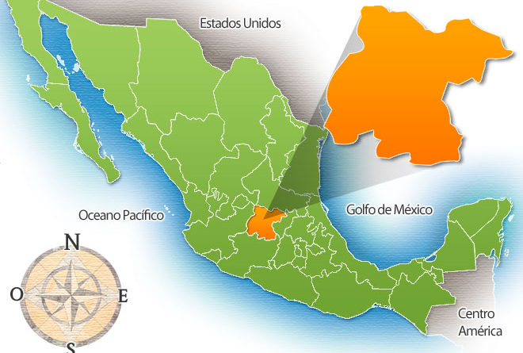
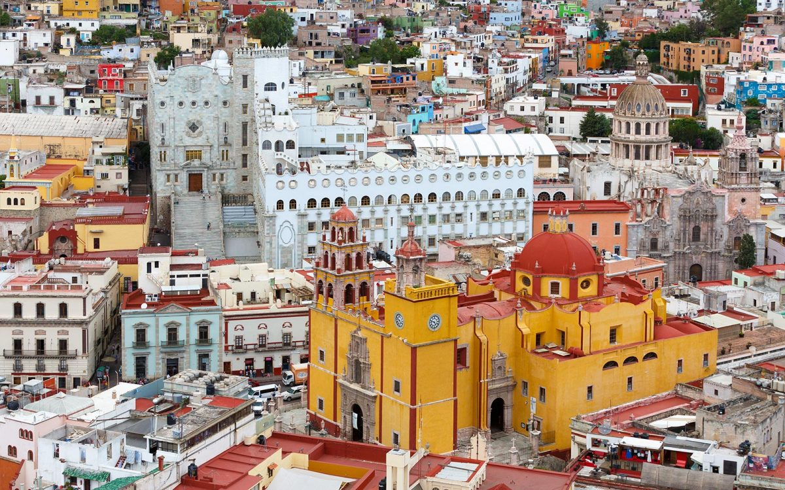

<main>
    <div class="position-relative">
        <section class="section section-lg section-hero section-shaped">
            <!-- Background circles -->
            <div class="shape shape-style-1 shape-unam-azul">
              <span class="span-150"></span>
              <span class="span-50"></span>
              <span class="span-50"></span>
              <span class="span-75"></span>
              <span class="span-100"></span>
              <span class="span-75"></span>
              <span class="span-50"></span>
              <span class="span-100"></span>
              <span class="span-50"></span>
              <span class="span-100"></span>
            </div>
            <div class="container py-lg-md d-flex">
              <div class="col px-0">
                <div class="row align-items-center justify-content-center">
                  <div class="col-lg-12">
                    <p class="lead  text-white">
                      Guanajuato es uno de los treinta y dos estados de la República Mexicana, que se ubica en la región centronorte del país. Su arquitectura colonial, sus zonas arqueológicas y bellezas naturales, la han posicionado como un destino turístico importante del país. Dos de sus ciudades, Guanajuato y San Miguel de Allende han sido nombradas por la UNESCO como Patrimonio de la Humanidad. 
                    </p>
                    <p class="lead text-white">En la ciudad de Guanajuato, principal centro turístico de la región, con sus museos y la alhóndiga de Granaditas, entre otros atractivos, ha sido sede de acontecimientos artísticos más importantes de Latinoamérica, como el Festival Internacional Cervantino.  La parroquia y arquitectura de la Ciudad de San Miguel de Allende, el Cerro del cubilete, en Silao; La Hacienda de Corralejo, Pénjamo en donde nació Miguel Hidalgo y Costilla prócer de la independencia nacional, son algunos sitios memorables que te invitamos a visitar. 
                    </p>
                  </div>
                </div>
                <div class="row align-items-center justify-content-center">
                  

                  <div class="col-lg-12 text-center ">
                    <div class="row">

                      <div class="col-lg-8">
                        
                      </div>
                      <div class="col-lg-4">
                        
                      </div>
                    </div>
                    
                    <br><br><br><br><br><br>
                    <h1 class="text-primary text-white">Guanajuato</h1>
                    <h3 class="text-primary text-white">Bellezas naturales y turísticas del estado de Guanajuato</h3>
                    <div style="width: 100%;"><div style="position: relative; padding-bottom: 50.00%; padding-top: 0; height: 0;">
                        <iframe width="560" height="315" src="https://www.youtube.com/embed/Kv8hBOrZPYg" frameborder="0" allow="accelerometer; autoplay; encrypted-media; gyroscope; picture-in-picture" allowfullscreen></iframe>
                     </div>
                    </div>


                    <h1 class="text-primary text-white">Enciende tus sentidos #DescubreGuanajuato</h1>
                    <h3 class="text-primary text-white">
                      El Estado de Guanajuato posea una belleza incomparable difícil de encontrar en otro lugar del mundo, basta contemplar sus ciudades que nos brindan espectaculares calles, callejones y edificaciones coloniales para transportarte en el tiempo. Recorrer su caminos revelan destellos  de historia y tradición, invitándote a rincones que terminan por enamorar el alma.
                    </h3>
                    <div style="width: 100%;"><div style="position: relative; padding-bottom: 50.00%; padding-top: 0; height: 0;">
                        <iframe width="560" height="315" src="https://www.youtube.com/embed/asKWBWVlAJE" frameborder="0" allow="accelerometer; autoplay; encrypted-media; gyroscope; picture-in-picture" allowfullscreen></iframe>
                     </div>
                    </div>


                    <h1 class="text-primary text-white">Bonito León Guanajuato</h1>
                    <h3 class="text-primary text-white">
                      En 2020 cumple 444 años de su fundación.
                    </h3> 
                    <div style="width: 100%;"><div style="position: relative; padding-bottom: 50.00%; padding-top: 0; height: 0;">  
                        <iframe width="560" height="315" src="https://www.youtube.com/embed/ZESp9m5j_ag" frameborder="0" allow="accelerometer; autoplay; encrypted-media; gyroscope; picture-in-picture" allowfullscreen></iframe>
                     </div>
                    </div>


                    
                    <h1 class="text-primary text-white">San Miguel de Allende, Ciudad Patrimonio de la Humanidad</h1>
                    <h3 class="text-primary text-white">Descubre una Ciudad Patrimonio de la Humanidad que hace grande al nombre de México, imponente, impredecible, interminable, así es San Miguel de Allende.</h3> 
                    <div style="width: 100%;"><div style="position: relative; padding-bottom: 50.00%; padding-top: 0; height: 0;">  
                        <iframe width="560" height="315" src="https://www.youtube.com/embed/GzfqlTPE14U" frameborder="0" allow="accelerometer; autoplay; encrypted-media; gyroscope; picture-in-picture" allowfullscreen></iframe>
                     </div>
                    </div>


                    <h1 class="text-primary text-white">Mineral de Pozos, Pueblo Mágico</h1>
                    <h3 class="text-primary text-white">La educación como derecho de la humanidad es un factor de cambio que da justicia y libertad social.</h3> 
                    <div style="width: 100%;"><div style="position: relative; padding-bottom: 50.00%; padding-top: 0; height: 0;">  
                        <iframe width="560" height="315" src="https://www.youtube.com/embed/Vjz4OVDrEuI" frameborder="0" allow="accelerometer; autoplay; encrypted-media; gyroscope; picture-in-picture" allowfullscreen></iframe>
                     </div>
                    </div>


                    <h1 class="text-primary text-white">Yuriria, Guanajuato. Pueblo Mágico</h1>
                    <h3 class="text-primary text-white">Este pueblo mágico es dueño de los más hermosos tesoros, tanto naturales como hechos por la mano del hombre, que podremos encontrar en el sur del estado de Guanajuato.</h3> 
                    <div style="width: 100%;"><div style="position: relative; padding-bottom: 50.00%; padding-top: 0; height: 0;">  
                        <iframe width="560" height="315" src="https://www.youtube.com/embed/QQx2HnyOcLQ" frameborder="0" allow="accelerometer; autoplay; encrypted-media; gyroscope; picture-in-picture" allowfullscreen></iframe>
                     </div>
                    </div>


                    <h1 class="text-primary text-white">Dolores Hidalgo, Pueblo Mágico</h1>
                    <h3 class="text-primary text-white">Descubre un Pueblo Mágico lleno de historia y tradición; enamórate con nosotros de la Cuna de la Independencia Nacional, su belleza, su sabor y artesanía.</h3> 
                    <div style="width: 100%;"><div style="position: relative; padding-bottom: 50.00%; padding-top: 0; height: 0;">  
                        <iframe width="560" height="315" src="https://www.youtube.com/embed/2kLQiJBRkhk" frameborder="0" allow="accelerometer; autoplay; encrypted-media; gyroscope; picture-in-picture" allowfullscreen></iframe>
                     </div>
                    </div>


                    <h1 class="text-primary text-white">Jalpa de Cánovas, Pueblo Mágico</h1>
                    <h3 class="text-primary text-white">Descubre un fascinante Pueblo Mágico que te llena los sentidos de naturaleza y tranquilidad. Reencuéntrate contigo mismo, en un lugar pequeño que tiene un corazón gigante.</h3> 
                    <div style="width: 100%;"><div style="position: relative; padding-bottom: 50.00%; padding-top: 0; height: 0;">  
                        <iframe width="560" height="315" src="https://www.youtube.com/embed/L-y1G3ZAt8M" frameborder="0" allow="accelerometer; autoplay; encrypted-media; gyroscope; picture-in-picture" allowfullscreen></iframe>
                     </div>
                    </div>


                  </div>
                </div>
              </div>
            </div>
            <!-- SVG separator -->
            <div class="separator separator-bottom separator-skew zindex-100">
              <svg x="0" y="0" viewBox="0 0 2560 100" preserveAspectRatio="none" version="1.1" xmlns="http://www.w3.org/2000/svg">
                <polygon class="fill-white" points="2560 0 2560 100 0 100"></polygon>
              </svg>
            </div>
        </section>
    </div>
   
    
    
  </main>